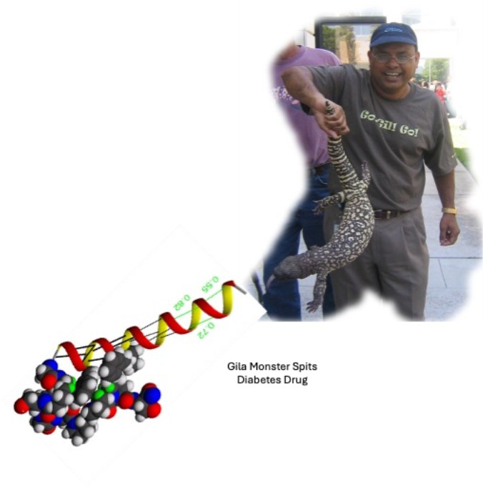

The role of temperature in Solid Phase Peptide Synthesis (SPPS)
This case study explores the role of temperature on speed of synthesis and crude purity
We continue our profile series with Dr. Ved Srivastava, a name synonymous with peptide science.
Dr. Srivastava currently serves as the Chief Scientific Officer at Perpetual Medicines, a company leveraging computational AI and ML to design next-generation peptide therapeutics. In addition to co-founding Phoundry Pharmaceuticals, he has held several high-level leadership positions, including Vice President of Chemistry at Aktis Oncology and Intarcia Therapeutics, and Head of Peptide Chemistry at both GlaxoSmithKline and Amylin Pharmaceuticals.
Dr. Srivastava’s work has been fundamental to the discovery and development of several clinical drug candidates and first-in-class peptide-based medicines such as Byetta™ (exenatide), Bydureon™, and Symlin™ (pramlintide)—medications that have revolutionized the treatment landscape for metabolic diseases. A former President of the American Peptide and current Chair of the Peptides Expert Committee for the United States Pharmacopeia (USP), he is a prominent figure in the scientific community. Recently, Dr. Srivastava received the American Chemical Society-North Carolina’s Distinguished Lectureship Award for his ‘significant and recognized research contributions to the chemical sciences.’
Dr. Srivastava has published numerous peer-reviewed manuscripts and patents and is the editor of six influential books focused on peptide-based drug discovery and Chemistry, Manufacturing, and Control (CMC). His career is defined by a commitment to delivering transformative clinical candidates to patients. In our conversation, we explore his career trajectory, the current landscape of peptide therapeutics, and the future of digital drug discovery.

CS: What was it about peptides that sparked your interest and led you to focus your work on them?
Ved: Early in my career, peptide science was an emerging field. I did my PhD research in small molecules for anti-diabetic agents. Then, peptides started to gain momentum; Bruce [Merrifield] won the Nobel Prize in 1984, and interest in peptides was growing. I thought it was a good opportunity to jump into this area because I could make a lot of contributions there; it was new, and there was a lot to do and learn. I reached out to one of the “gurus” at the Central Drug Research Institute in India who does peptide work and said, “I want to work on peptides,” and he said, “Are you sure?”. I took 1/3 of my salary from what I was making to switch to peptides.
CS: It seems to have worked out ok!
Ved: It worked out good. Then I came to the US and worked with Charles Stammer on non-canonical amino acids and their incorporation into peptides. Professor Stammer introduced me to John Stewart, whose book is considered the “Bible” by everyone in the field. Stewart and Bruce Merrifield are really the ones who put peptide synthesis on the map. So I worked with him (Professor John Stewart), and continued in peptides and I love it! Then GLP-1 came on the scene and Amylin, and here you go.
CS: How has peptide science changed since you first entered the field?
Ved: When I started, you could forget about non-canonical, even canonical amino acids—you have to derive things yourself; you had to make a Boc amino acid, an Fmoc amino acid, a t-butyl ester, then do manual synthesis. Things were advancing slowly in those days. In the 80s and 90s, synthesis was hard. But we worked around it, we figured things out, and now everything is simple! You buy amino acids, put them in the machine, press the button, and you go. There is so much advanced technology now. You can do a lot of chemistry that was not known in those days: stapling, cyclization, and those kinds of things.
On the development side, there was a general perception that you couldn’t develop peptides, because they’re too short, not soluble, hard to make, they can’t be a drug. We learned the rules to stabilize peptides, improve their half-life, how to optimize them, and how to study their pharmaceutical properties.
Purification was difficult and NMR was not as powerful; now we can do NMR on peptides. In those days, we didn't have combinatorial libraries with millions of possibilities. Things have changed from the technology side, the therapeutic side, and finding a library (now we have mRNA display, AI-based discovery, those kinds of things that are moving us ahead) is easier. We can weed out a lot using computational tools before we ever start screening.
CS: As a former President of the American Peptide Society, how would you describe the "state of the union" for peptide therapeutics in 2026 compared to even a few years ago when you served in that role?
Ved: In 2026, I would say that there are a few things driving this era. Number one is macrocyclic peptides; number two is a lot of AI-driven design—it’s playing a major role. Third is targeted radiopharmaceuticals. Those are doing well and getting approved, and more biotech companies are working on them. It’s very interdisciplinary. Another area that I expect continued growth in is APCs, antibody-peptide conjugates. Peptides used to be considered a tool, but I don't think they’re only a tool anymore. You can no longer say it is an emerging modality—it is the central pillar for modern drug discovery and innovative pharmaceuticals. In 2026 and moving beyond, peptides are recognized as one of the key modalities.
CS: Why do you think peptides have been demonstrated to be so effective for managing metabolic conditions like Type 2 diabetes and obesity?
Ved: This is a very complex problem, because for multiple hormones in the body—in the gut and in the pancreas and adipose tissues—they all play a role for metabolic regulation, with roles for diabetes and the cardiovascular system. Peptides are part of the endogenous body. You basically provide additional peptide to the body that is either missing or insufficient in a diseased state, or is defective. You're using the body's own system with the peptide to fix that. That's the reason that peptides are very useful for metabolic diseases. That's the reason we started working on GLP-1 and Bydureon and all of these things. We started seeing direct progress for those kinds of therapeutic areas.
Now, we are trying to explore areas like oncology; we are trying to explore macrocyclic peptides there, but linear peptides are not going to work for that. The success of Byetta and Bydureon and Symlin—that has changed the whole peptide game for metabolic disease. The challenge is they are not orally available, but that is the next direction. Right now they are mostly injection and subcutaneous.
CS: Recently, there have been a couple of peptide drugs that just got approved for oral formulations. Since these have been successful, how realistic is it to get other peptide drugs into that format?
Ved: Oral bioavailability is very, very poor; that's one thing. You have to take a lot more of the drug in order to get a little bit of it into the blood. They accumulate in the body, or they are excreted. When you take a drug that has an oral bioavailability of 0.3%, it is not a feature to me. In the long term, extra drug will be in the body, one way or another. We started exploring a longer delivery time—once a month, or once-in-a-3-month delivery for these kinds of diseases like obesity and diabetes that are chronic in nature.
At Intarcia, we started working on a formulation of an implantable device that gives you once-in-a-6-month or once-in-a-year treatment. Unfortunately, the FDA did not approve it, because they didn't see the drug remain in the body for 6 months or one year like we had hoped, and then we had manufacturing challenges, and we had some kidney issues, so it didn’t get approved.
Then there’s the patient. If you look at oral prescriptions written by doctors, people don't re-fill them. And the people that are taking multiple oral medicines—they maybe think it’s not urgent and they forget it, or if they are not in pain, they think, “Oh, I can take it tomorrow.” Compliance is a real issue for an oral drug.
I would say if you take a once in a 3-month or 6-month injection for a chronic disease like this, that's the way to go. One injection, taken once a month or once every 6 months—that way, you can handle multiple things: drug bioavailability and compliance, and people don't forget to take it. That's what we worked on at Intarcia: an implantable device, once in 6-month GLP-1, and once in a year. At my current company, we are developing once in 6 months, or once every 3 months medications, injected subcutaneously.
CS: It could become like going to the dentist. We go every 6 months, right? A lot of people would appreciate having to take injectable medications less frequently, especially people with a fear of needles that really need that medication. Having to inject it every day or even weekly is probably really unpleasant for them.
Macrocyclic peptides exist in the space between small molecules and large biologics. Beyond size, what properties make this chemical class advantageous for drug discovery?
Ved: We talked about GLP-1s, and those are all linear peptides. If somebody asks what is next that peptides can help, after metabolic diseases, it’s oncology. For diabetes, the target is outside the cell. In oncology, most of the targets are inside the cell, so you have to get the drug inside the cell. Macrocyclic peptides are the best of both worlds, between small molecules and biologics. They are capable of going inside the cell. That's the reason people are exploring macrocyclics, because if we are successful with the macrocyclic drugs, we can explore so many cancer targets, so many intracellular targets—it is a gold mine sitting there. That's one reason macrocyclics are interesting right now, because they have properties that can be useful in this area.
They can also bind to sites where most small molecules cannot. That's why we call them “undruggable targets,” because they're very flat and the small molecules can’t bind, but macrocyclic peptides can. Because of their cyclic nature, and the fact that they often have a lot of non-canonical amino acids, they're very stable. The half-life is much better than linear peptides; because they're cyclic, they're structurally constrained, so enzymes cannot break them apart into pieces, whereas with linear peptides, enzymes can break them apart. Those are the advantages of macrocyclic peptides. It makes them better oral drug candidates because they’re very stable.
We really need to figure out a rule that can apply universally to most of the macrocyclic drugs to get them inside the cell membrane. I think we are not there yet, but we are working on it (“we” means the peptide community) and working to understand how to get peptide macrocyclic drugs inside the cell.
One of the drugs we all know is called cyclosporine. It's orally bioavailable; it has every property that you can think of for macrocyclic peptides. But we cannot mimic that with other macrocyclics! If you make a minor change in cyclosporine, it's no longer cyclosporine-like. We tried to apply these properties from cyclosporine to so many macrocyclics, but it doesn’t work because conformational flexibility is very challenging. I think in the next few years, this will improve. When we understand the science, peptide oncology drugs are going to come into the market, and then here we go: peptides for metabolic disease, peptides for oncology, whatever you want in the world from peptides.
CS: What do you consider the most significant breakthrough in peptide synthesis in the last decade?
Ved: As I mentioned earlier, we used to have to make amino acid derivatives, synthesis was more difficult, we had to do purification by gel chromatography rather than high-performance HPLC. And solid-phase synthesis was done manually, not automated, in those days. The significant breakthrough that happened over a number of years is automated and high-throughput solid-phase peptide synthesis. Nothing like CSBio and other companies, microwave synthesis, heated synthesis was around back then. Not only just linear peptides, but the ability to create cyclic peptides, conjugation, and stapling, those kinds of things. That is huge progress in solid-phase synthesis.
Green chemistry is being developed a lot; for instance, we have the challenge of reducing acetonitrile and DMF use. The green chemistry work from Fernando Albercio’s group has been helping a lot in synthetic methodology. There are a lot of chemical ligation techniques that have been developed in Phil Dawson’s group and Steve Kent’s that help to make longer peptides or protein-shaped molecules and mini-proteins. Modern phage display and DNA-encoded libraries (DEL) for peptides have created a lot more screening capability. These are the techniques that we have mastered over the last few years, which are increasing the throughput of peptide synthesis.
Purification techniques and HPLC columns have advanced a lot too. We didn't know how to remove the co-eluting peak because the particle diameter of the HPLC was big and it couldn’t be separated. Now the HPLC people have figured out how to make the resin tighter so that we can separate those things. Purification methodology has developed a lot, in addition to synthesis. Lyophilization techniques are much better now than they used to be. Those are the things on the solid-phase linear peptide or simple cyclic peptide development.
CS: What do you think of AI? Is AI playing a role in synthesis development?
Ved: There's a lot of AI-driven work going on in terms of how to improve peptide synthesis and how to optimize the different step-by-step methodology that you can apply to the synthesis. If you have a synthesis and it's not working well, there might be a lot of aggregation happening or other side reactions. All of this information can be learned by the machine learning AI. When you use a seed peptide sequence and you feed it into the AI or machine learning process, if you tell it that this peptide is difficult to make, it can tell you at what places it will be difficult and what amino acid residues will be difficult. So, you can go back and work accordingly, and you can perform a synthesis in one shot rather than performing three or four rounds of synthesis. AI is playing a role not only with peptide design but is also playing a role in synthesis as well, and this area will grow over time.
CS: Now that AI is able to design novel peptides at an unprecedented pace, how critical is automated equipment in ensuring that physical production doesn't become the bottleneck for digital discovery?
Ved: It's absolutely critical! AI can generate millions of potential sequences, but a computer model is just a prediction. If you are building and validating a modeling platform, you have to make molecules to test them. And if your synthesis is slow, you become the bottleneck. At my current company (Perpetual Medicines), we integrate our AI platform directly with automated wet labs. The AI designs, the robot makes, and the data from those experiments flows back to refine the next AI/ML cycle. It's a closed-loop system. Digital discovery without high-speed physical production is just a theoretical exercise. On the other hand, with AI/ML-driven peptide lead optimization-SAR, we don’t need to make thousands of peptides. At Perpetual, we only make about 100 peptides, rather than thousands like traditional methods.
CS: How do you balance curiosity-driven research with the commercial realities of pharmaceutical development?
Ved: That is a very good question; I think everybody should think about these things. We have to balance both. When you're working in industry or trying to develop a drug, the patient is first. Very high-quality science alone is not going to get your drug to the patient. Work with the patient in mind: getting a drug quickly to the patient is the top goal.
At the same time, you have to set aside time to explore new ideas. Back in my early days, I always told chemists to do 80/20; 20% of the time, you do curiosity-driven work. It may not align with the strategic vision that we have, but it will give you novel ideas and something will come up and then we can adopt it as we grow. You should engage in some curiosity-driven work, and that will benefit the science and the company as well. You can't say, “I'm going to do 50/50,” if you work in industry. The key is to translate that curiosity into something actionable. In industry, you have to ask: Does this solve a real clinical problem? Can it be developed, manufactured, and delivered at scale? I've always kept my 20% curiosity-driven work in every company I work for, but I never lose focus on the company's goals and timeline. It’s all about balancing, but you need both; you can't just get away with one or the other.
Curiosity-driven work will keep your mind working fast! You could read a lot, so your mind is always turning about something new. Whereas, when you work on the project, your focus is only on that particular topic. If your knowledge is limited to GLP-1, for example—if you’re curious about other topics, learn some other techniques that can help in that therapeutic area or other modalities—your work on GLP-1 will benefit. Today, we're doing APCs, antibody-drug conjugates. If somebody said, “I’m going to do peptides because the company tells me to do peptide work only,” but if they learn antibodies over time—now look at that! We are doing antibody-peptide conjugates. And now, it's one of the company's drugs.
CS: In drug development, many promising candidates fail before they reach the clinic. How do you handle the setback of a project that works well in the lab but doesn’t demonstrate clinical efficacy?
Ved: This is something every chemist should be open to. Failure is part of life, especially when you're in drug development. It's like making a molecule in the lab; there are some syntheses that work, some that fail. Some drug candidates go to the clinic, some do not. This is a part of life. Take it positively and learn from what doesn't work.
At Amylin, we spent 10 years in development and the FDA did not approve it (Symlin). We would work all day and then go back after dinner and work more—and still, we didn't get approved. We were all thinking that we were going to lose our jobs and were unsure what we would do next. But we were persistent. We responded to questions the FDA posed; they told us the drug was 'approvable,' but it still wasn't fully approved. You feel like it’s not going to happen, but there's a little bit of light there. We kept responding to them and working with them, and finally it was approved for Type 1 and Type 2 diabetes.
Persistence led us to success. If we had panicked and said, “I'm going to change my job. This is not gonna work. I will lose my paycheck and the company will close down,” that panicked state can derail you. So be persistent; today, we can say, “Our fingerprints are on the Amylin drug.”

Another story that I can tell you: working on Byetta, back in the early days, most people did not believe in it. Exenatide was derived from the venomous saliva of the Gila monster, and everybody said, “This is never going to be a drug.” But some of us believed in it and kept generating the data, and today it’s an $85 billion market. The lesson is that you need to believe in the data, believe in the science, but don't get distracted by external influences. They will drive you to failure.
At Intarcia, we worked on an implantable drug for 10 years and the FDA still didn’t approve it. We learned from that—the kidney was affected, so we should not take this drug into the market because you don't want to create a kidney problem with a patient with diabetes. You learn from it; it's part of life: setbacks and failure. But be persistent and resilient; develop curiosity and believe in what you do.
Let the data speak. Be open to what the data are saying and be prepared to pivot. Setbacks are going to come. The question becomes how we navigate through that. A positive attitude is the key thing. This is not only for drug development; it's a regular part of life, too. We are riding a rollercoaster, and sometimes it goes in a straight line, then a loop, zigzag, and then it goes straight. So you stay calm, focus, and learn and move on.
CS: It's like you said too, when something doesn't pan out the way you expected, then what are the data actually saying? Maybe that takes you somewhere interesting too, whereas if you're only focused on how it didn't work the way you wanted it to, you might miss something interesting. But you have to be open to what you're actually seeing, right? That's part of being a good scientist.Ved: It’s science, but it’s life too. Everything is not the way you think it’s going to be. I have done a lot of things apart from science; I wrote six books, right? When I was writing a certain book, I wanted it a certain way. It didn't end up that way at the end, but it actually came out better! We wanted to go in one direction (a radiopharmaceutical book) focused solely on therapeutics and just a little bit of imaging. As we worked on it, we felt like we needed to cover more imaging. At first I said, “No, no, you don't want to go there,” but it turns out that is the best combination! In radiopharmaceuticals, you see what you treat and treat what you see; that's called theranostics. You take the drug, image the entire body, figure out where the cancer is, then you give the drug and treat that particular spot. You don't need to drug the entire body; you can precisely, surgically target the place where the cancer cells are. The book came out very good, and it’s my favorite book now.
CS: What advice would you give students studying peptide science and what they can do during their PhD to make the transition from academia to industry easier?Ved: One of the things that I see peptide chemists doing is that they get deep down into the chemistry. What they should be doing is balancing learning the chemistry and the biology of the peptide. It is critical for a student to understand both chemistry and biology if they want to go into peptide science. Peptide science, peptide therapeutics, is not only about small molecule chemistry or synthetic chemistry—it's about discovering drugs. If you don't understand the biology, you're not going to develop a strong skill set.
The second thing: if a student wants to go into industry, I would highly encourage them to do an internship or a postdoc in industry. Nowadays, most companies offer postdoc or internship positions, summer internships, or the opportunity to go and shadow peptide chemists. Get real exposure if you want to go to an industry job. Understanding how decisions are made in a development setting is incredibly valuable. In industry, it’s not just about generating data; it’s about overcoming challenges and moving projects forward. If you can demonstrate that and develop a problem-solving mindset during your PhD, the transition becomes much smoother.
The third thing is they should heavily engage in different peptide societies. It's not just about networking, but you also learn about the science and how the science is moving. And, it may help you get a job! All PhD students who are pursuing peptide science need to do that.
CS: You're very interested in using AI tools doing peptide development. Are there any particular AI tools or interfaces that you think would really benefit students that are studying now? What are some frameworks that you think are going to be really useful in the near future?
Ved: That is a little bit complicated, because the AI tools that everybody sees don't apply in drug discovery. A lot of AI that applies in drug discovery is different from what we see in social media. Fundamentally, they need to learn Rosetta; they need to learn AlphaFold; they need to learn X-ray crystallography. Those are fundamental things because those are part of building the AI. These are easily available, very accessible; you can go online and learn. Then they have to work with some company where they use these techniques to build their own proprietary platform (neural network, quantum physics based AI tools, and machine learning tools) and then learn how they integrate to design and generate a molecule. Those are good foundations to start with for AI drug discovery.
CS: You’ve worked on many important peptide therapeutics—which do you feel has had the most tangible impact on human health? What is your favorite naturally occurring peptide?
Ved: Of all the molecules that I have worked on, no doubt, exenatide is my favorite molecule. I feel proud that I got to work on it. It's a perfect example of nature being the best chemist. It’s very stable against most of the enzymes in the human body. Finding it and then harnessing its power as a therapeutic—it’s a beautiful story of natural product drug discovery. The Gila monster only eats 2 times a year, so we realized that there is something there. Exenatide suppresses their appetite.
I like this molecule, not because it became the 1st GLP-1 drug, but because a lot of people don't know that it is the first molecule that demonstrated the small, mini-protein-like structure. If you look at the whole sequence of exenatide, at the end of the C-terminus, the tail folds back and forms a small cage-type structure that is a mini-protein. I see not only the drug or that it came from a natural product, but I also see the special features that they have. There's no doubt it's my favorite peptide hormone. Because of this, we started a program called “peptides from exotic species” and started looking at the peptides from all these migrating birds, python, elephant, lion, all kinds of species, and thought about how we can benefit with certain kinds of drugs.
CS: What’s your “elevator pitch” to explain what you do to someone you meet at a dinner party?
Ved: For folks with a scientific background, I would say I’m a peptide scientist and drug developer with over 30 years of experience turning bioactive peptides into medicines for conditions like diabetes or obesity. I was part of the team behind the first GLP-1 therapy, Byetta, and have continued to advance next-generation peptide drugs. Recently, my research has focused on AI-driven peptide drug discovery for oncology and metabolic diseases.
For someone I meet at a dinner party who has no scientific background, I usually say, "I design and build tiny, complex proteins called peptides to treat different diseases." If you know someone using a GLP-1 drug for diabetes or weight loss, that drug is a peptide. My career has been dedicated to bringing those kinds of medicines to life. Now I am using AI-driven drug discovery to bring medicines faster and more economically for cancer and metabolic diseases.
CS: How do people who don’t have a scientific background respond when you tell them about your work? Do they understand what you’re talking about?
Ved: They do understand, because they see a lot of things on TV and the news, so it connects very quickly. They know what insulin is, but a lot of people don’t know that insulin is a peptide-based drug. They connect well and they want to hear more about it, especially when you tell them about GLP-1. Even a lot of people with a scientific background, they don’t know very much about GLP-1 unless they are medicinal chemists, but they want to learn more about it and how it works, and they want to understand it from their perspective as a real-world application.
CS: What is one interest or passion of yours that has nothing to do with chemistry?
Ved: When I'm not in a lab, I’ve always enjoyed mentoring and building scientific communities. Whether it’s through professional societies, advisory roles, or working with early-stage startups, I find it very rewarding to help others grow and translate ideas into reality. Right now I'm trying to get a few more books started—not directly writing them myself, but as an Editor-in-Chief at Royal Society of Chemistry.
I travel a lot; I love international travel. I love to learn about different cultures. And I do ballroom dance. I've been a national champion and a regional champion. Before COVID, I used to fly small planes recreationally. After COVID, once you don't fly for a year or so, then you have to restart everything, so I haven’t returned to that. That's when I started ballroom dancing. Those are my hobbies that relieve my stress.
As peptides move from an 'emerging modality' to a central pillar of modern pharmaceuticals, voices like Dr. Ved Srivastava’s provide a vital perspective on where we’ve been and where we are headed. Dr. Srivastava’s work continues to push the boundaries of what is possible in drug development. We want to extend our sincere thanks to Dr. Srivastava for his time and for his profound expertise. His fingerprints are not only on the life-saving drugs of today but on the innovative frameworks that will define the medicines of tomorrow.
This case study explores the role of temperature on speed of synthesis and crude purity
In collaboration with University of California, Davis; UCD evaluated microwave and conduction heating and presented the findings at the 28th American Peptide Symposium
In this video series, we provide a 2 hour mini-course on the fundamentals and how to perform SPPS
Understand what drives peptide synthesis purity, speed, and waste generation
CSBio is a leading peptide instrumentation manufacturing company located in Silicon Valley, California.
CSBio provides research scale peptide synthesizers, pilot scale peptide synthesizers, commerical scale peptide synthesizers, and DNA/RNA oligonucleotide synthesizers.